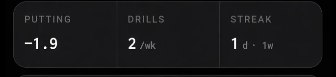
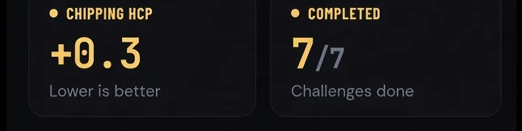

Golf Basics
Average Golf Handicap by Age and Gender
The real USGA numbers for men and women, and where yours ranks

The real USGA numbers for men and women, and where yours ranks
Key takeaway: The average golf handicap in the US is a Handicap Index of 14.0 for men and 28.8 for women, from the USGA’s 2025 data. Single figures covers 29.8% of men and 4.9% of women who keep an index. The USGA does not publish averages by age.
The average golf handicap in the US is 14.0 for men and 28.8 for women. Those are average Handicap Index figures from the USGA’s 2025 Golf Scorecard, published in January 2026, and they cover the 3.68 million American golfers who keep an index.
Two things before you compare yourself. These averages only count golfers who keep an index, and the USGA says that group leans towards the keener players. And the USGA doesn’t publish averages by age, so you won’t find made-up ones here.
The average Handicap Index for men is 14.0, across 3.03 million male index holders. It has hardly moved: the average male golf handicap was 14.2 in 2020.
The most common range is 10.0 to 14.9, which holds 26.48% of men. That’s also the band the average falls in.
Add up the USGA’s bands and 29.8% of men are in single figures, below 10.0. Only 10.2% are below 5.0. And 2.01% have a plus handicap, better than scratch.
That last figure is the closest the USGA gets to “scratch or better”. It publishes the share below 0.0, so anyone sitting exactly on scratch is counted in the 0.0 to 4.9 band instead.
The average Handicap Index for women is 28.8, across 650,000 female index holders. The most common range is 25.0 to 29.9, with 19.06% of women.
Women’s handicaps are spread much wider than men’s. Just over half, 51.6%, sit between 20.0 and 34.9, and 16.1% are 40.0 or higher. At the other end, 4.9% are in single figures and 0.85% have a plus handicap, by the USGA’s figures.
The average female golf handicap has moved the other way to the men’s. It was 27.7 in 2020. New golfers are likely part of the reason. Women who got an index for the first time in 2025 averaged 32.5, and 162,000 more women hold an index than in 2020.
Here’s the full spread from the USGA’s 2025 Golf Scorecard. The bold figure is the most common band for each, and the one the average falls in.
| Handicap Index | Men | Women |
|---|---|---|
| Below 0.0 (plus) | 2.01% | 0.85% |
| 0.0–4.9 | 8.23% | 1.50% |
| 5.0–9.9 | 19.57% | 2.54% |
| 10.0–14.9 | 26.48% | 5.24% |
| 15.0–19.9 | 22.20% | 10.27% |
| 20.0–24.9 | 12.43% | 15.84% |
| 25.0–29.9 | 5.59% | 19.06% |
| 30.0–34.9 | 2.18% | 16.71% |
| 35.0–39.9 | 0.79% | 11.92% |
| 40.0–44.9 | 0.28% | 7.24% |
| 45.0–49.9 | 0.11% | 4.15% |
| 50.0–54.0 | 0.13% | 4.67% |
If you play in the UK, the picture is different. Here are the UK averages.
The USGA does not publish average handicaps by age. Its 2025 Golf Scorecard splits the numbers by gender, by state and by how often people post scores. Age isn’t in it, and it isn’t on the USGA’s live handicapping statistics page either.
Most age tables you’ll find online, including the one that used to be on this page, don’t trace back to a published dataset. So there’s no average handicap by age table here. If the USGA publishes one, I’ll add it.
What the data does show is how the things behind a handicap change as you get older. For under-18s, see the average golf handicap for juniors.
Arccos measured 20 million driver swings for its 2022 distance report. Its average golfers, those with a 14.1 Handicap Index, drove it 237 yards in their 20s, 216 in their 50s and 194 in their 70s, GOLF.com reported.
That’s 43 yards between the 20s and the 70s. Longer approaches mean fewer greens and more chips and pitches. That’s where age shows up on your card.
Time tends to run the other way. In Arccos data from 2017, users aged 21 to 30 played 19 rounds a year on average. Those over 60 played 33. It’s old data, so treat it as a guide.
Nothing inside 50 yards needs clubhead speed, so the distance you lose with age costs you far less there. I think that’s the part of the game where an older golfer can hold their number, or bring it down.
The closest the USGA gets to an experience split is first-timers. In 2025, 537,000 golfers got an index for the first time. The new men averaged 16.3 and the new women 32.5, against 14.0 and 28.8 for everyone.
There’s no published US average for seniors either. The fairest picture is the distance data above: average golfers drove it 205 yards in their 60s and 194 in their 70s.
If you’re over 60, compare yourself with the average for your gender first. Then look at where your shots go, not how far you hit it.
A good golf handicap is one below the average for your gender: under 14.0 for a man, under 28.8 for a woman. Below that, you’re better than average.
From there the groups get small quickly. Adding up the USGA’s bands:
For context, I play off 3.1 and I was off 1 as a junior. Among US men with an index, 3.1 would sit in the best 10.2%.
Your Handicap Index isn’t your average score. The USGA works it out from the eight best Score Differentials in your most recent 20 rounds. The other 12 don’t count.
So a 14 doesn’t play to 14 most days. It’s closer to what you shoot when things go reasonably well. On a normal day you’ll be above it, and that’s how the system is meant to work.
The scores back this up. The National Golf Foundation puts the average 18-hole score in the US at about 94, the USGA reports. That’s 22 over on a par-72 course.
Index holders aren’t a random sample, either. The USGA notes that golfers with an index tend to include more seriously engaged players. So the average golfer without one probably plays to a higher number than 14.0 or 28.8.
New to how the index is calculated?
What Is a Golf Handicap? →Want the scores behind the handicaps?
Average Golf Score →Most golfers chase distance. I think the quicker shots are inside 100 yards, and putting alone makes the point. In Arccos data from 2017, 15-plus handicappers averaged 3.2 three-putts a round, double the 1.6 of a 1 to 5 handicapper. That’s 1.6 shots a round before you’ve hit a chip.
Three-putting more than your handicap should?
How to Stop Three Putting →For your next five rounds, write down your putts, three-putts and up-and-downs. You’ll soon see whether your shots go on the greens or around them.
Chip 10 balls to a hole 10 yards away and count how many finish inside three feet. Do it again next week. If the number goes up, you’re improving. If it doesn’t, change what you’re doing.
Your Handicap Index blends everything together. Scoring Zone’s Performance Hub gives your short game its own handicap from a 60-shot test, so you can see whether your practice is moving it. A notebook works too, honestly. What matters is that you measure it.
There’s more in how to lower your golf handicap. And if you don’t have an index yet, work out yours with the free handicap calculator.
Stephen
The average golf handicap in the US is a Handicap Index of 14.0 for men and 28.8 for women, according to the USGA’s 2025 Golf Scorecard. It covers the 3.68 million American golfers who keep an index. Five years earlier, in 2020, the averages were 14.2 for men and 27.7 for women.
A good golf handicap is anything below the average for your gender, which in the US means under 14.0 for men and under 28.8 for women. Single figures puts a man in the best 29.8% of index holders and a woman in the best 4.9%, based on the USGA’s 2025 figures.
The average golf handicap for men in the US is 14.0, according to the USGA’s 2025 data on 3.03 million male index holders. The most common range is 10.0 to 14.9, which holds 26.48% of men. Overall, 29.8% are in single figures and 2.01% have a plus handicap.
The average golf handicap for women in the US is 28.8, according to the USGA’s 2025 data on 650,000 female index holders. The most common range is 25.0 to 29.9, which holds 19.06% of women. Overall, 4.9% are in single figures and 0.85% have a plus handicap.
The USGA does not publish average golf handicaps by age, and I haven’t found a published US dataset that does. What the data does show is distance falling with age: in Arccos’s 2022 report, average golfers drove it 237 yards in their 20s and 194 yards in their 70s.
7 days free
Then from $4.99/month · Cancel anytime
Start your 7-day free trial
35+ drills & tests · Short Game Handicap · Performance tracking



